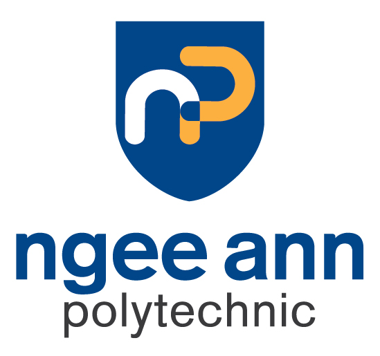

I'm an AI Engineer with hands-on experience building end-to-end ML pipelines and deploying production-grade models across classical ML, computer vision, and Large Language Models. Currently training under AI Singapore's national AI Apprenticeship Programme (AIAP) and pursuing a Master of IT in Business (AI) at Singapore Management University.
My background in Pharmaceutical Science (NUS, Honors Distinction) gives me a unique lens — bridging rigorous scientific methodology with modern machine learning to drive data-informed decisions and scalable AI solutions.
Selected for a competitive national AI programme with intensive deep-skilling in AI/ML engineering, followed by an industry project deployment.
Developed and fine-tuned deep learning models in PyTorch for computer vision, with production-grade MLOps workflows supporting reproducible research.
Conducted PBPK/PK-PD modelling and quantitative LC-MS/MS analysis to support drug bioavailability research and evidence-based decision-making.
Led data-driven product development for pharmaceuticals and nutraceuticals, managing a team of five across multiple client projects.
Master of IT in Business – Artificial Intelligence Track

Bachelor of Science in Pharmaceutical Science with Honors (Distinction)

Diploma with Merit in Biomedical Science